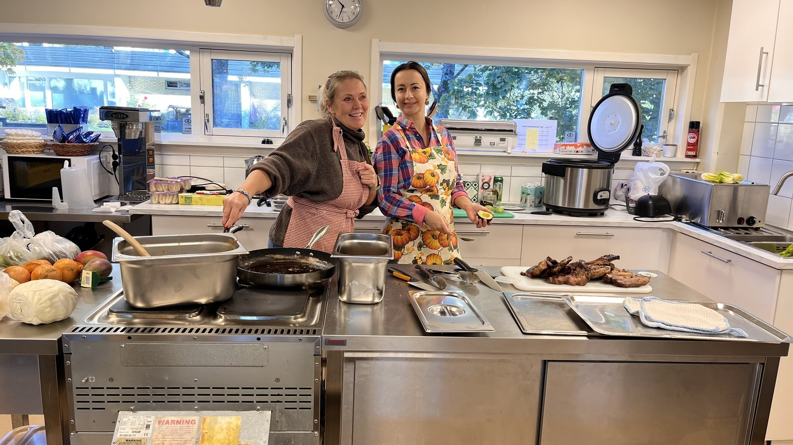
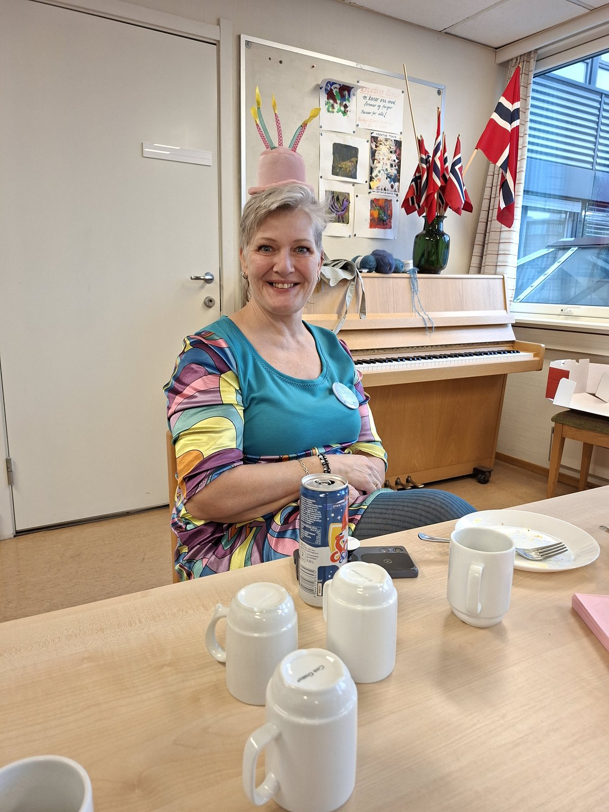
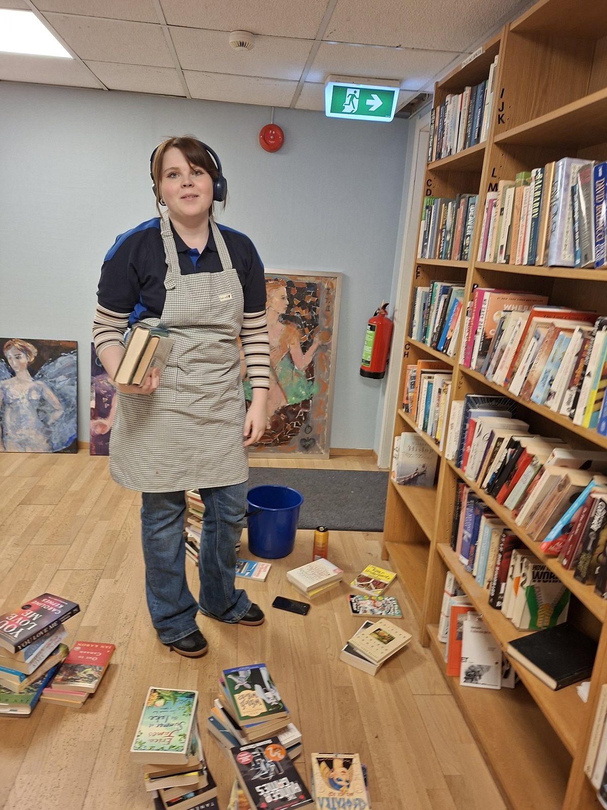
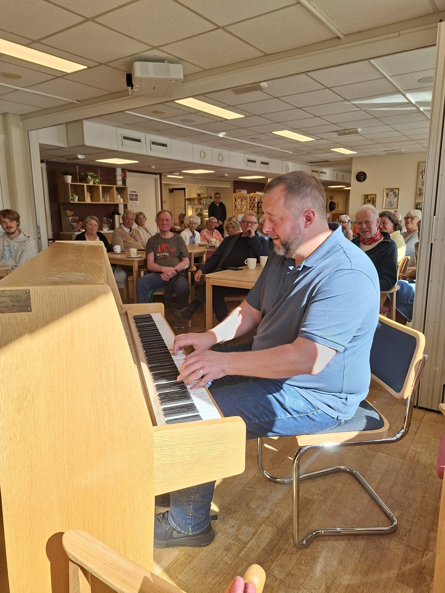
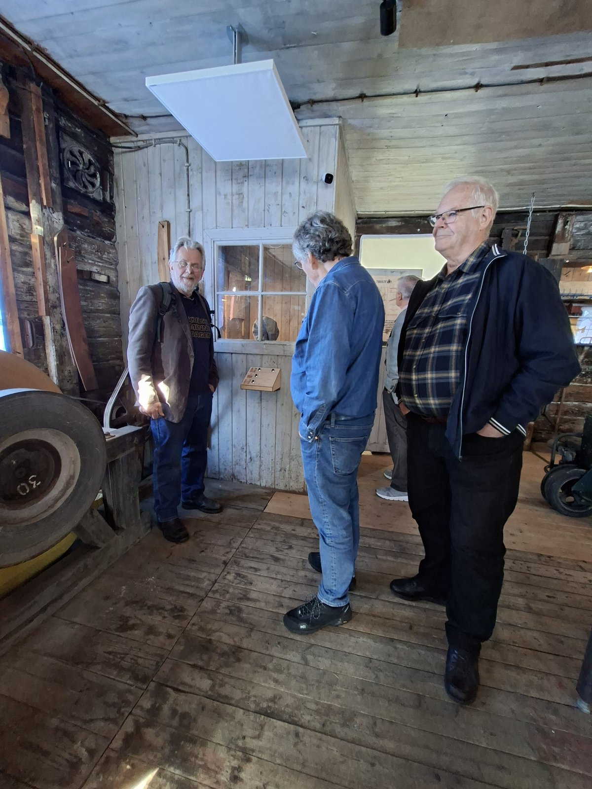
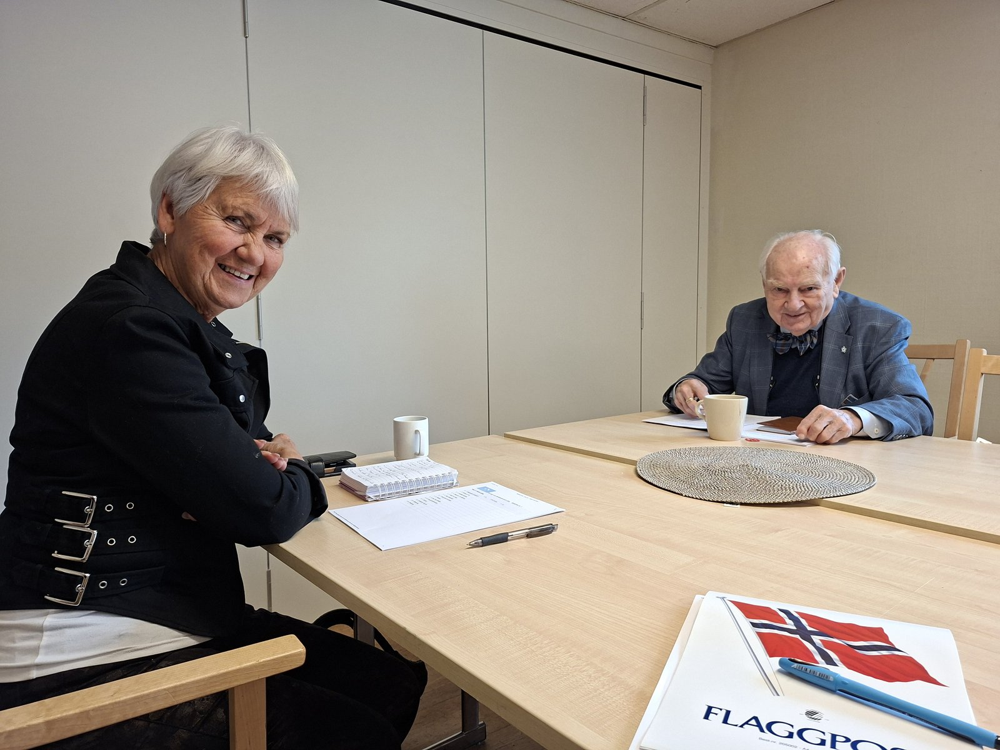
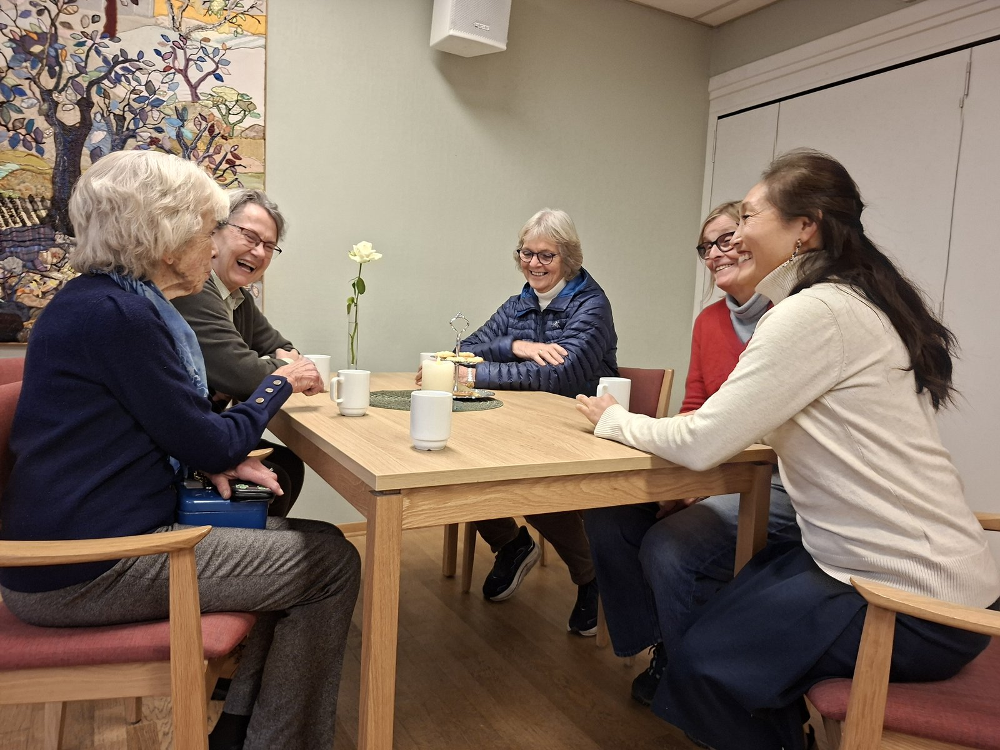
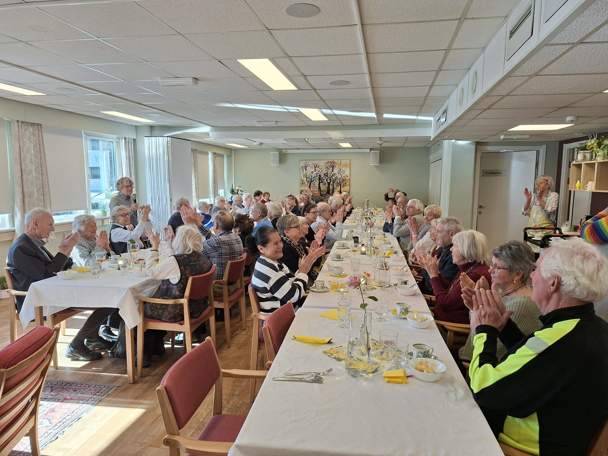

Hjertebank i Vestre Aker: Frivilligbloggen
Bli med bak kulissene hos frivilligsentralen. Her deler vi de varme historiene fra hverdagen, nyttig fagstoff og små øyeblikk som viser kraften i lokalt engasjement.
Historier


Øyeblikk






